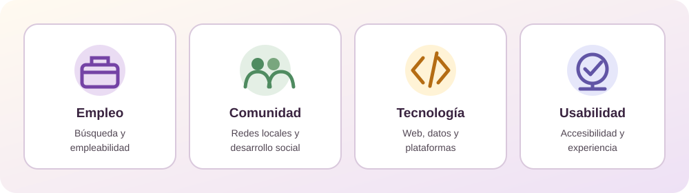

Fuentes bibliográficas consultadas en el proyecto BrasiliaTrabaja. Las referencias que incluyen un enlace en el documento se pueden abrir desde su título.

Empleo
Búsqueda de vacantes e inserción laboral.
Comunidad
Oportunidades y desarrollo local.
Tecnología
Plataformas, programación y datos.
Usabilidad
Experiencia y diseño centrado en las personas.
- Millán Calabuig, S. (2016). Plan de negocio para la creación y puesta en marcha de una plataforma tecnológica que ofrece servicios online para la búsqueda de empleo: “Worksite” [Trabajo final de carrera, Universidad Politècnica de València]. Riunet.
- Yara Mujica, F. C., Bastidas Salgado, J. F., & Gutiérrez Herrera, O. A. (2022). Desarrollo de aplicación web para la publicación y búsqueda de empleo y productos [Trabajo de grado, Universidad Cooperativa de Colombia, Campus Ibagué-Espinal]. Repositorio Institucional UCC.
- Gutiérrez Muñoz, A. M., Jaramillo Quintero, E. D., & Mazo Urrea, N. J. (2021). Desarrollo de un portal web de empleo con diseño responsive orientado a la búsqueda de oportunidades laborales para mano de obra no calificada como calificada en el sector agrícola del Eje Cafetero [Trabajo de grado, Universidad Católica de Pereira]. Repositorio UCP.
- Medina Núñez, M. (2021). CVAPP: Aplicación web para crear y compartir currículum [Trabajo de fin de grado, Universidad de Salamanca]. Gredos.
- Menéndez Salazar, L. A. (2025). Análisis de la plataforma digital para generar nuevas oportunidades de empleo en los graduados de la carrera Tecnologías de la Información [Proyecto de titulación, Universidad Estatal del Sur de Manabí]. Repositorio UNESUM. }
- Pineda Montes, S. Y., Roldán Ortega, C. H., & Vides Meza, C. A. (s.f.). Innovación tecnológica como una estrategia desde la alta gerencia para generar empleo en Colombia [Trabajo académico]. Digitk Areandina.
- Verano, C. (s.f.). Aplicación web para la búsqueda de empleos en el mercado laboral venezolano. InnovaTec, Vol. 2(2), diciembre 2023. Universidad Bicentenaria de Aragua. Recuperado de
- Bustamante, L. (2020). Plataforma digital de empleo para estudiantes universitarios en Ecuador [Trabajo de investigación]. Universidad Estatal del Sur de Manabí.
- García Guilló, A. (2020). Desarrollo de una aplicación móvil multiplataforma para búsqueda de empleo utilizando React Native, Redux y Firebase [Trabajo de fin de grado]. Universidad Miguel Hernández de Elche.
- Gutiérrez Muñoz, A. M., Jaramillo Quintero, E. D., & Mazo Urrea, N. J. (2021). Desarrollo de un portal web de empleo con diseño responsive orientado a la búsqueda de oportunidades laborales para mano de obra no calificada como calificada en el sector agrícola del Eje Cafetero [Trabajo de grado]. Universidad Católica de Pereira.
- Reyes Carvajal, A. J. (2021). Desarrollo de una plataforma digital para generar oportunidades de empleo en graduados de Tecnología de la Información [Proyecto de investigación]. Universidad Estatal del Sur de Manabí.
- Yara Mujica, F. C., Bastidas Salgado, J. F., & Gutiérrez Herrera, O. A. (2022). Aplicación web S.E.E.P. (Servicio Empleado Empleador Producto) como estrategia para dinamizar el acceso laboral en el Tolima [Proyecto académico]. Universidad del Tolima.
- Arango, L., Escobar, D., & Monsalve, E. (2013). Subempleo por ingresos y funcionamiento del mercado de trabajo en Colombia. Revista Desarrollo y Sociedad, (72), 157–203.
- Bermúdez, M. (2020). Introducción a las bases de datos. Manuscrito inédito.
- Córdova, A., & Sánchez, K. (2021). Una mirada al desarrollo económico local con enfoque al crecimiento socioeconómico. Ciencia Latina Revista Científica Multidisciplinar, 5(5), 8302–8306.
- Fernández, M., Angós, J., & Salvador, J. (2003). Interfaces de usuario: diseño de la visualización de la información como medio para mejorar la gestión del conocimiento y los resultados obtenidos por el usuario. En V Congreso ISKO – España.
- Gómez, F. (2010). Redes comunitarias y avances de supervisión en trabajo social (Cap. 1). Editorial Universidad de Murcia.
- Grau, J. (2007). Pensando en el usuario: la usabilidad. Anuario ThinkEPI, 172–177.
- Huapaya, F., & Ramos, F. (2025). Estereotipos de género y empleabilidad de los colaboradores de las agencias bancarias de una entidad financiera de Lima Sur – 2024 [Tesis de pregrado, Universidad Autónoma del Perú]. Repositorio de la Universidad Autónoma del Perú.
- Lanari, M., Alegre, P., & López, M. (1999). Las vacantes laborales de verano y la oferta de mano de obra local: trabajo estacional en Mar del Plata. Universidad Nacional de Mar del Plata.
- Pacherres, L. (2018, diciembre 19). Páginas web: Introducción, conceptos, creación de sitios web, diseño de páginas web, herramientas para generar páginas web, tipos, principales funciones, aplicaciones [Monografía de pregrado]. Universidad Nacional de Educación “Enrique Guzmán y Valle”.
- Rodríguez, L. (2022). Automatización de pruebas funcionales para el sitio web de la Empresa de Proyectos e Ingeniería del Petróleo (EPP) [Tesis de licenciatura, Universidad de las Ciencias Informáticas]. Repositorio Institucional UCI.
- Solano, J. (2011). Lenguajes de programación. Universidad Nacional de Ingeniería, Facultad de Ciencias.
- Weller, J. (2006). La inserción laboral de los jóvenes: características, tensiones y desafíos. CEPAL.
- Arango, L. E., Escobar, D. C., & Monsalve, E. M. (2013). Subempleo por ingresos y funcionamiento del mercado de trabajo en Colombia. Desarrollo y Sociedad, (72), 157–203.
- Arango, L. E., Escobar, D. C., & Monsalve, E. M. (2013). Subempleo por ingresos y funcionamiento del mercado de trabajo en Colombia (Borradores de Economía No. 764). Banco de la República de Colombia.
- Ballesteros, V. A., Rodríguez, O. I., Lozano, S., & Nisperuza, J. L. (2020). El aprendizaje móvil en educación superior: una experiencia desde la formación de ingenieros. Revista Científica, 38(2), 243–257.
- Bermúdez León, M. J. (2020). Introducción a las bases de datos. Repositorio Institucional Universidad San Marcos.
- Bisquerra Alzina, R. (1992). Orientación psicopedagógica para la prevención y el desarrollo. Boixareu Universitaria.
- Boletín Económico de ICE. (2010). La teoría de búsqueda de empleo. Boletín Económico de ICE, (3000), 35–42.
- Cardona Acevedo, M., Montes Gutiérrez, I. C., Vásquez Maya, J. J., Villegas González, M. N., & Brito Mejía, T. (2007). Capital humano: Una mirada desde la educación y la experiencia laboral. Universidad EAFIT.
- Contreras-Espinoza, I. D. J., & Kuri-Alonso, I. (2024). Inserción laboral de egresados universitarios durante la pandemia de COVID-19. Cuadernos de Investigación Educativa, 15(2).
- Fernández Casado, P. E. (2020). Usabilidad web: Teoría y uso. RA-MA Editorial.
- Gamero, J. (2011). El trabajo decente en el Perú: Una medición al 2009. Comunidad Andina.
- Gómez Vélez, M. A. (2015). La noción de empleabilidad. Katharsis, (19), 61–84.
- Hassan Montero, Y., & Martín Fernández, F. J. (2005). La experiencia del usuario. No Solo Usabilidad, (4).
- Hernández-Fernaud, E., Ramos-Sapena, Y., Negrín, F., Ruiz-de la Rosa, C. I., & Hernández, B. (2011). Empleabilidad percibida y autoeficacia para la búsqueda de empleo en universitarios. Psicothema, 23(2), 200–205.
- Jansen, M. (2011). La teoría de la búsqueda de empleo: una revisión general. Boletín Económico de ICE, (3000), 35–42.
- Joyanes Aguilar, L. (2020). Fundamentos de programación: Algoritmos, estructuras de datos y objetos (5.ª ed.). McGraw-Hill.
- Márquez Ortiz, L. E., Cuétara Sánchez, L. M., Cartay Angulo, R. C., & Labarca Ferrer, N. J. (2020). Desarrollo y crecimiento económico: análisis teórico desde un enfoque cuantitativo. Revista de Ciencias Sociales, 26(1), 233–253.
- Martínez-Rodríguez, F. M. (2009). El proceso de inserción laboral: implicaciones educativas para la mejora de la empleabilidad. Revista Complutense de Educación, 20(2), 455–471.
- Piattini, M., García Rubio, F., Pino, F., & García Rodríguez de Guzmán, I. (2019). Calidad de sistemas de información (5.ª ed.). RA-MA Editorial.
- Quintero Montaño, W. J. (2020). La formación en la teoría del capital humano: una crítica sobre el problema de agregación. Análisis Económico, 35(88), 87–112.
- Reyes, G. E. (2001). Principales teorías sobre el desarrollo económico y social. Nómadas.
- Rodríguez, L. (2022). Automatización de pruebas funcionales para sitios web.
- Rovira, C., & Marcos, M. C. (2013). Diseño de sitios web: disciplinas, materias y esquemas integradores. Hipertext.net, (12).
- Suárez Lantarón, B. (2016). Empleabilidad: análisis del concepto. Revista de Investigación en Educación, 14(1), 67–84.